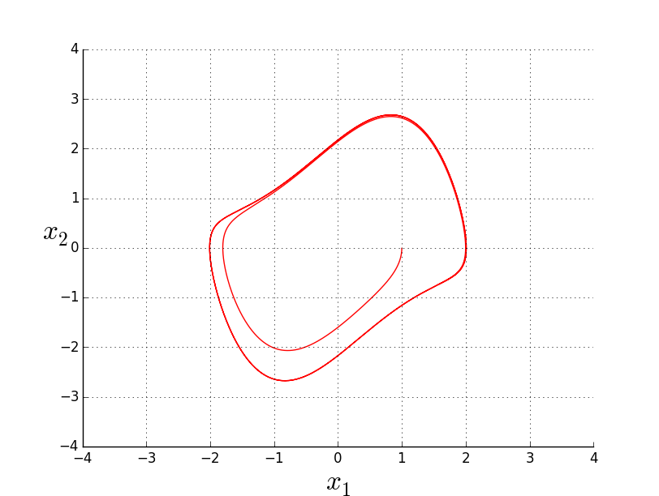

Let us consider the van der Pol equation [Verhulst (1996)]:
\begin{equation*}
\ddot{x} + x = \mu (1 - x^2) \dot{x} ,
\end{equation*}
formulated around 1920 by Balthasar van der Pol to describe oscillations in a triode-circuit. With \(x_1 = x\) and \(x_2 = \dot{x}\), we obtain the following dynamical system, with parameter \(\mu\):
\begin{equation*}
\begin{cases}
\dot{x}_1 = x_2 \\
\dot{x}_2 = -x_1 + \mu (1-x_1 ^2)x_2
\end{cases}.
\end{equation*}
You can visualize the solution passing through \((1,~0)\) at \(t = 0\): choose a value of \(\mu\) (decimal number between \(-1\) and \(2\)). For \(\mu > 0\), the system has a stable limit cycle.

The limit cycle in the van der Pol equation
Bibliography
F. Verhulst. Nonlinear differential equations and dynamical systems. Springer Science & Business Media, 1996. ↩